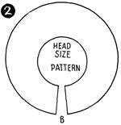
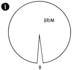

1952—How to Make Hats
by Ruby Carnahan
Making Patterns for Ready Made Frames
BRIM PATTERNS
Cut a circle of paper larger than frame and pin to under side of frame, easing paper in to fit frame, pinning in darts or adding gores where needed. Draw a line around brim edge and head-size on paper pattern. Mark back and front of pattern. Remove pattern, cut off excess if darts have been pinned in or mark where gores are needed and pin in extra pieces. Cut off excess paper on line around edge of brim and around headsize. When cutting material from pattern allow 1/2" on material. Mark back and front on pattern.
CROWN PATTERNS
Cut a circle of paper larger than top of crown and pin to crown, back, front and sides. Draw a line on paper around edge of crown, remove paper from crown and cut on line. Side crown is a bias piece. Allow 1/2" when cutting material.
ROUND CROWN PATTERN
When covering a buckram frame that has a round crown with a fabric such as velvet, satin, wool or pique, cut a paper pattern to fit crown.
TO CUT PATTERN
Pin a strip of paper 3" wide to center of buckram crown from headsize in back to headsize in front. Pin a piece of paper on side of crown to fit side crown and pin to center strip of paper. Trim off all excess paper. Mark back and front of pattern
Use this pattern to cut material for covering round crown.
BLOCKING MATERIAL FOR ROUND CROWN
When using a material that stretches to cover a round crown, a pattern is not needed, as material is stretched, steamed and blocked on utility head block, allowed to dry and then removed from block and placed on buckram crown.
Instructions on Page 21.
MAKING A BERET PATTERN (ILLUS. 1 AND 2)
A Beret is two brims put together and a headsize cut in the facing brim. When you learn to use this simple method, you can make a pattern of any type Beret, also using your own individuality in styling Beret. Brim can be square, round, scalloped, darts taken in brim, etc. Any of these suggestions will change the style of the Beret.
Cut two circles of paper a little larger than Beret is to be. Place your correct headsize pattern in center or toward the back (depending on whether Beret is to have an even brim or a short back brim), draw a line around headsize pattern on paper pattern facing. If darts have been taken on pattern, mark on pattern. Pin pattern together in back and slip facing pattern on Utility block. Pin top paper circle to facing around brim edge. Try pattern and make any necessary adjustments. Cut off all excess paper on brim edge or on darts if any. Be sure brims fit exactly, when pattern is unpinned. Mark back and front of pattern on top and facing of pattern.